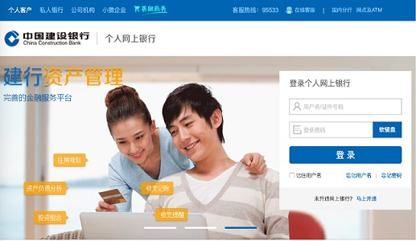
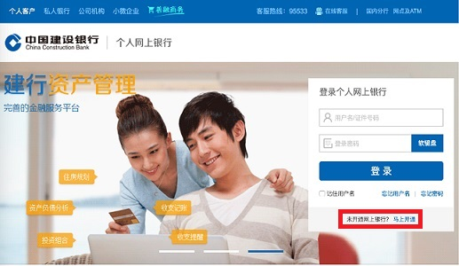
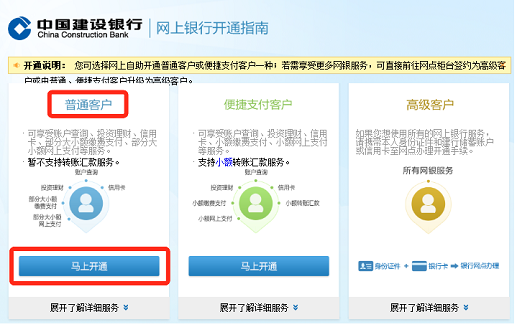
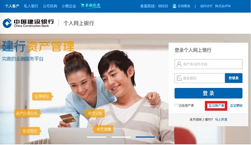
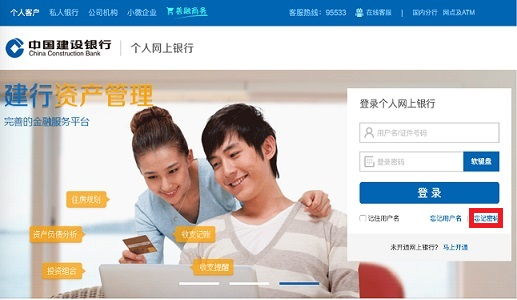
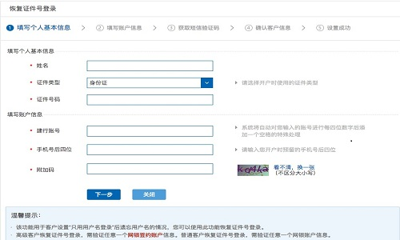
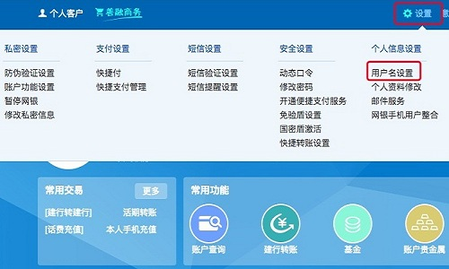
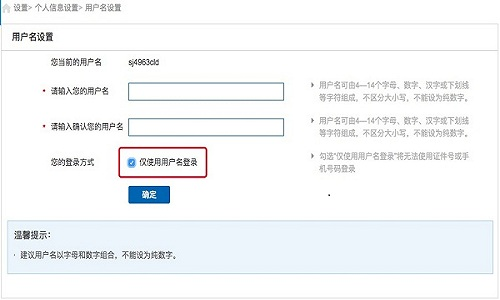

一、网银导入只支持网上银行的账号登录
本平台的网银导入服务只支持建行网上银行登录，即您注册该网银的用户名、证件号码，不支持手机银行登录和企业网银登录。
建设银行个人网上银行登录入口：https://ibsbjstar.ccb.com.cn/app/V5/CN/STY1/login.jsp
二、如何确认自己登录账号、登录密码的有效性
请访问建设银行官网（https://ibsbjstar.ccb.com.cn/app/V5/CN/STY1/login.jsp）进行登录验证。如果能登录成功，请将相应登录账号和登录密码在本平台进行登录即可完成网银导入。
三、如何开通中国建行银行网上银行
开通建行网上银行需要您先持有一张建行储蓄卡，
然后按照以下教程进行开通：
1、打开建设银行官网（https://ibsbjstar.ccb.com.cn/app/V5/CN/STY1/login.jsp），点击登录界面右下角的“马上开通”。（如下图）
【开通网银】直达链接：https://ibsbjstar.ccb.com.cn/CCBIS/V6/STY1/CN/FB30101_notice.jsp
2、然后在打开的页面选择【普通用户】，点击【马上开通】，填写相关信息就可以开通。
3、开通完毕后，即可使用注册的网银账号和查询密码，使用本平台进行网银导入。
四、我使用U盾、数字证书登录网银怎么办
目前本平台暂不支持这类网银导入，建议您按照上面的开通网银教程，自助开通建行个人网上银行，如有疑惑，可致电建设银行客服：95533 咨询。
五、忘记网银登录用户名怎么办
请直接访问建设银行个人网上银行，点击【忘记用户名】进行找回用户名操作。
六、忘记网银登录密码怎么办
请直接访问建设银行个人网上银行，点击【忘记密码】进行重置密码操作。
七、常见问题
Q：提示【用户名／密码错误】，怎么办？
1、请确认您的网上银行（与手机银行不同）已经开通并激活，您可以联系客服热线（95533）确认是否已经成功开通网上银行，如若未开通网银，请参照上面的教程进行开通👆
2、如果已在柜台开通网银，请确认您输入的账号有效，建议您可以在官网（https://ibsbjstar.ccb.com.cn/app/V5/CN/STY1/login.jsp）进行登录验证，如若忘记密码，请直接访问建设银行个人网上银行，点击【忘记密码】进行重置密码操作。
3、如果能在官网正常登录，仍然无法正常导入，可能是服务器繁忙，您可以稍后再试。
Q：提示【密码试错超限】，怎么办？
建设银行一天内输错密码的次数是有限的，借记卡累计输错3次/信用卡累计输错3次，网银将会被锁住，建议您联系客服热线95533，或第二天确认密码后再进行尝试登录。
Q：提示【修改网上银行登录密码】，怎么办？
为了保障用户的财产安全，建设银行网上银行要求用户定期修改网银登录密码，请您登录官网（https://ibsbjstar.ccb.com.cn/app/V5/CN/STY1/login.jsp）修改密码后，再使用本平台导入。
Q：提示【未设置网上银行登录密码】，怎么办？
e账户客户或柜台开通网银的客户，首次登录网上银行需要设置登录密码，请您登录官网（https://ibsbjstar.ccb.com.cn/app/V5/CN/STY1/login.jsp），点击【设置登录密码】，在打开的页面中，填写相关信息进行密码的设置，如下图所示：

Q：提示【只能用用户名登录】，怎么办？
1、请确认您选择的登录方式是用户名登录，如若不是，请选择用户名登录方式。
2、如果您忘记用户名，请点击【忘记用户名】直达链接：https://ibsbjstar.ccb.com.cn/CCBIS/B2CMainPlat_13?SERVLET_NAME=B2CMainPlat_13&CCB_IBSVersion=V6&PT_STYLE=1&CUSTYPE=0&TXCODE=O10110，您可以使用此功能恢复证件号登录。高级客户恢复证件号登录，需验证任意一个网银签约账户信息。普通客户恢复证件号登录，需验证任意一个网银账户信息。填写信息如下图所示：
3、修改官网的登录方式，教程如下：
使用用户名登录官网（https://ibsbjstar.ccb.com.cn/app/V5/CN/STY1/login.jsp）后，您可以在【设置】中找到【用户名设置】,如下图所示：
点击【用户名设置】，在打开的页面中取消【仅使用用户名登录】的复选框，点击确定后保存更改，如下图所示：
